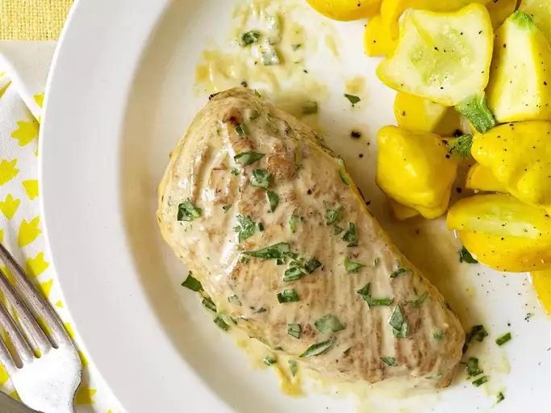

Tarragon Chicken

Description
Chicken breasts bathed in a delicate mustard tarragon sauce. A quick and simple recipe that you can serve on a weeknight but tastes like a French chef came to your house!
Ingredients
- 1 tbsp butter
- 1 tbsp olive oil
- 4 skinless, boneless chicken breast halves
- salt & pepper to taste
- 1 tbsp dijon mustard
- 2 tsp chopped fresh tarragon
Steps
- Melt the butter and heat the oil in a skillet over medium-high heat. Season chicken with salt and pepper, and place in the skillet. Brown on both sides. Reduce heat to medium, cover, and continue cooking 15 minutes, or until chicken juices run clear. Set aside and keep warm.
- Stir cream into the pan, scraping up brown bits. Mix in mustard and tarragon. Cook and stir 5 minutes, or until thickened. Return chicken to skillet to coat with sauce. Drizzle chicken with remaining sauce to serve.